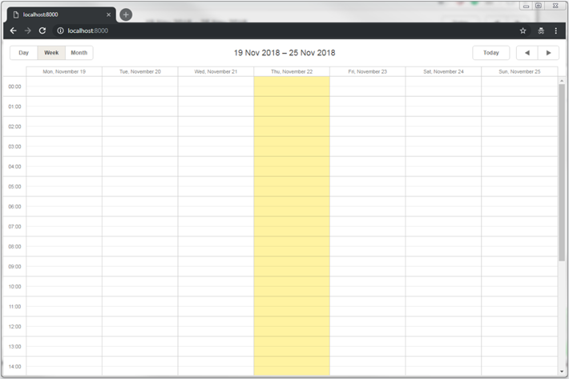
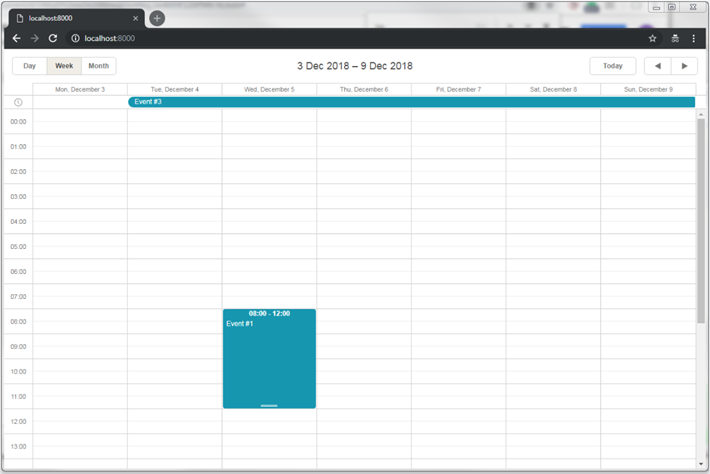
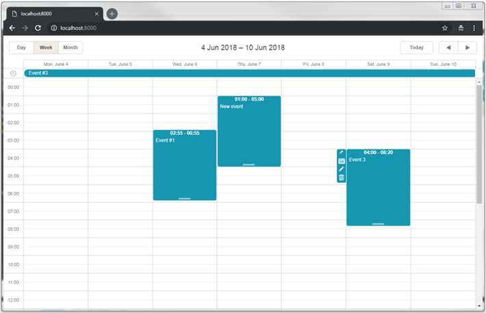

dhtmlxScheduler with PHP:Laravel
This tutorial describes how to add dhtmlxScheduler into a Laravel app.
There are tutorials intended for building server-side integration with the help of other platforms:
- dhtmlxScheduler with ASP.NET Core
- dhtmlxScheduler with ASP.NET MVC
- dhtmlxScheduler with Node.js
- dhtmlxScheduler with PHP
- dhtmlxScheduler with PHP:Slim
- dhtmlxScheduler with Ruby on Rails
- dhtmlxScheduler with dhtmlxConnector
You can get the ready demo on GitHub or follow a step-by-step guide below.
The complete source code is available on GitHub.
Step 1. Initializing a project
Creating a project
Create a new application using Composer:
composer create-project laravel/laravel scheduler-howto-laravel
It should take a minute to download and create all necessary files. Once everything is done, you can check that everything is correct so far:
cd scheduler-howto-laravel
php artisan serve
At this step you should get a default Laravel page:

Step 2. Adding Scheduler to the page
Adding a View
Firstly, we'll add a new page with dhtmlxScheduler to our app. Go to the resources/views folder and create a new view named scheduler.blade.php:
resources/views/scheduler.blade.php
<!DOCTYPE html>
<head>
<meta http-equiv="Content-type" content="text/html; charset=utf-8">
<script src="https://cdn.dhtmlx.com/scheduler/edge/dhtmlxscheduler.js"></script>
<link href="https://cdn.dhtmlx.com/scheduler/edge/dhtmlxscheduler.css"
rel="stylesheet">
<style type="text/css"> html, body{
height:100%;
padding:0px;
margin:0px;
overflow: hidden;
}
</style>
</head>
<body>
<div id="scheduler_here" class="dhx_cal_container" style='width:100%; height:100%;'>
<div class="dhx_cal_navline">
<div class="dhx_cal_prev_button"> </div>
<div class="dhx_cal_next_button"> </div>
<div class="dhx_cal_today_button"></div>
<div class="dhx_cal_date"></div>
<div class="dhx_cal_tab" name="day_tab"></div>
<div class="dhx_cal_tab" name="week_tab"></div>
<div class="dhx_cal_tab" name="month_tab"></div>
</div>
<div class="dhx_cal_header"></div>
<div class="dhx_cal_data"></div>
</div>
<script type="text/javascript"> scheduler.init("scheduler_here");
</script>
</body>
Here we've defined a simple HTML layout, added sources of dhtmlxScheduler from CDN and initialized scheduler using the init method.
Note that we've also specified 100% height for the document body and for the scheduler container. Scheduler will use the size of its container, so some initial sizes are required.
Changing the default route
After we've added a new page, we need to make it accessible from a browser. For this tutorial, we'll make our scheduler the default page of an app.
Go to routes/web.php and change the default route:
routes/web.php
<?php
Route::get('/', function () {
return view('scheduler');
});
Run the app again to make sure it did the trick:

Step 3. Preparing a database
So, we've got an empty scheduler. Let's connect it to the database and populate it with data.
Creating a database
Be sure to update database configuration in .env, for example:
.env
DB_CONNECTION=mysql
DB_HOST=127.0.0.1
DB_PORT=3306
DB_DATABASE=scheduler-test
DB_USERNAME=root
DB_PASSWORD=
The next step is to create model classes and migrations. You can generate classes and migration files using the Artisan command:
php artisan make:model Event --migration
After that find the migrations in the database/migrations folder and define a database schema.
Have a look at the database schema expected by Scheduler.
The code for the Events table looks like this:
database/migrations/_create_events_table.php
<?php
use Illuminate\Support\Facades\Schema;
use Illuminate\Database\Schema\Blueprint;
use Illuminate\Database\Migrations\Migration;
class CreateEventsTable extends Migration
{
/**
* Run the migrations.
*
* @return void
*/
public function up()
{
Schema::create('events', function (Blueprint $table) {
$table->increments('id');
$table->string('text');
$table->dateTime('start_date');
$table->dateTime('end_date');
$table->timestamps();
});
}
/**
* Reverse the migrations.
*
* @return void
*/
public function down()
{
Schema::dropIfExists('events');
}
}
And run the migration:
php artisan migrate
At this step, if you use an older version of MySQL database, you may get an error which looks like this: "Syntax error or access violation: 1071 Specified key was too long; max key length is 1000 bytes".
If it happens, go to app/Providers/AppServiceProvider.php and add required settings to AppServiceProvider:
<?php
namespace App\Providers;
use Illuminate\Support\ServiceProvider;
use Illuminate\Support\Facades\Schema;
class AppServiceProvider extends ServiceProvider
{
public function boot()
{
Schema::defaultStringLength(191); }
...
}
Here are more details on this particular error.
While we are at the migration, we can generate some test data for our app. Generate a seeder class using the artisan command:
php artisan make:seeder EventsTableSeederAdd some data to EventsTableSeeder:
database/seeds/EventsTableSeeder.php
<?php
use Illuminate\Database\Seeder;
class EventsTableSeeder extends Seeder
{
public function run()
{
DB::table('events')->insert([
['id'=>1, 'text'=>'Event #1', 'start_date'=>'2018-12-05 08:00:00',
'end_date'=>'2018-12-05 12:00:00'],
['id'=>2, 'text'=>'Event #2', 'start_date'=>'2018-12-06 15:00:00',
'end_date'=>'2018-12-06 16:30:00'],
['id'=>3, 'text'=>'Event #3', 'start_date'=>'2018-12-04 00:00:00',
'end_date'=>'2018-12-20 00:00:00'],
['id'=>4, 'text'=>'Event #4', 'start_date'=>'2018-12-01 08:00:00',
'end_date'=>'2018-12-01 12:00:00'],
['id'=>5, 'text'=>'Event #5', 'start_date'=>'2018-12-20 08:00:00',
'end_date'=>'2018-12-20 12:00:00'],
['id'=>6, 'text'=>'Event #6', 'start_date'=>'2018-12-25 08:00:00',
'end_date'=>'2018-12-25 12:00:00']
]);
}
}
And call table seeders from DatabaseSeeder.php:
database/seeds/DatabaseSeeder.php
<?php
use Illuminate\Database\Seeder;
class DatabaseSeeder extends Seeder
{
public function run()
{
$this->call(EventsTableSeeder::class);
}
}
After that we can seed our database from the command line:
php artisan db:seedDefining model classes
The data is managed via the Eloquent model classes. We've already generated a class for events at the previous step. It is ready to use and doesn't require any changes to work with scheduler.
Step 4. Loading data
Once the database is created and the models are defined, we can load data into our scheduler. The client side requires dates of the following format, so let's create a controller with an action that produces such a JSON. Execute the following command in the console:
php artisan make:controller EventControllerThen open a new controller at app/Http/Controllers/EventController.php and add the index action:
app/Http/Controllers/EventController.php
<?php
namespace App\Http\Controllers;
use App\Event;
class EventController extends Controller
{
public function index(){ $events = new Event();
return response()->json([
"data" => $events->all()
]);
}
}
And register a route, so the client could call this action. Note that we'll add the route to the api.php routes file:
routes/api.php
<?php
use Illuminate\Http\Request;
Route::get('/data', 'EventController@index');
And finally, call this action from the view:
resources/views/scheduler.blade.php
scheduler.config.date_format = "%Y-%m-%d %H:%i:%s";
scheduler.init("scheduler_here", new Date(2018, 11, 3), "week");
scheduler.load("/api/data", "json");
scheduler.load sends an AJAX request to the specified URL and will expect a JSON response as we've defined before.
Also, note that we've specified the date_format value. This is how we tell the scheduler which format of dates the data source will use, so the client side could parse them.
If you check the app now, you should see that there are now tasks in our scheduler:

Dynamic loading
Currently, scheduler loads all records from the events table on startup. It can work well if you know that the amount of data will remain small over time. But when scheduler is used for something like a planning/booking application and you don't delete or move obsolete records to another table, the amounts of data will build up fairly quickly and in a couple of months of active usage you may find that your app requests a couple of MBs of events each time a user loads the page.
It can be easily avoided by using dynamic loading. Scheduler will add the displayed dates to the request parameters and you'll be able to return only the records that need to be displayed. Each time a user switches to a new data range, scheduler will request a new portion of data.
In order to enable this mode on the client go to resources/views/scheduler.blade.php and add the following line:
resources/views/scheduler.blade.php
scheduler.config.date_format = "%Y-%m-%d %H:%i:%s";
scheduler.setLoadMode("day");
scheduler.init("scheduler_here", new Date(2018, 5, 6), "week");
scheduler.load("/api/events", "json");
And update the app controller accordingly as in:
app/Http/Controllers/EventController.php
class EventController extends Controller
{
public function index(Request $request){
$events = new Event();
$from = $request->from;
$to = $request->to;
return response()->json([
"data" => $events->
where("start_date", "<", $to)->
where("end_date", ">=", $from)->get()
]);
}
}
Step 5. Saving changes
For now, our scheduler can read data from the backend. Let's make it write changes back to the database.
The client side will work in the REST mode, meaning that it will send POST/PUT/DELETE requests for events actions. Check the format of requests and all the routes the scheduler will use.
Now we need to define a controller that handles actions on the model, create route for it and enable data saving on the client side.
Adding controllers
Let's start with controllers. We'll create one RESTful resource controller for each model. It will contain methods for adding/deleting and updating the model.
Controller for events
<?php
namespace App\Http\Controllers;
use Illuminate\Http\Request;
use App\Event;
class EventController extends Controller
{
public function index(Request $request){
$events = new Event();
$from = $request->from;
$to = $request->to;
return response()->json([
"data" => $events->
where("start_date", "<", $to)->
where("end_date", ">=", $from)->get()
]);
}
public function store(Request $request){
$event = new Event();
$event->text = strip_tags($request->text);
$event->start_date = $request->start_date;
$event->end_date = $request->end_date;
$event->save();
return response()->json([
"action"=> "inserted",
"tid" => $event->id
]);
}
public function update($id, Request $request){
$event = Event::find($id);
$event->text = strip_tags($request->text);
$event->start_date = $request->start_date;
$event->end_date = $request->end_date;
$event->save();
return response()->json([
"action"=> "updated"
]);
}
public function destroy($id){
$event = Event::find($id);
$event->delete();
return response()->json([
"action"=> "deleted"
]);
}
}
And a route for it:
routes/api.php
<?php
use Illuminate\Http\Request;
Route::resource('events', 'EventController');
A couple of notes regarding this code:
- When a new task is inserted, we return its id back to the client in the tid property of the response object.
- We assign a default value to the progress parameter. Many request parameters are optional, which means that if a client-side task doesn't have them assigned, they won't be sent to the server action.
- The response JSON can have any number of additional properties, they all can be accessed from the client-side handler.
Enabling data saving on the client side
Finally, we will configure the client side to utilize the API we've just implemented:
resources/views/scheduler.blade.php
scheduler.config.date_format = "%Y-%m-%d %H:%i:%s";
scheduler.setLoadMode("day");
scheduler.init("scheduler_here", new Date(2018, 11, 3), "week");
scheduler.load("/api/events", "json"); var dp = new dataProcessor("/api/events"); dp.init(scheduler);
dp.setTransactionMode("REST");
Now you have a fully interactive Scheduler with the ability to view, add, update and delete events.

Please check more of our guides for other features of dhtmlxGantt.
Recurring events
In order to enable recurrence (e.g. "repeat event daily") you'll need to add an appropriate extension to the scheduler.blade.php, update the model and the code of the Events controller.
Firstly, go to scheduler.blade.php and add a recurring extension after dhtmlxscheduler.js:
resources\views\scheduler.blade.php
<!DOCTYPE html>
<head>
<meta http-equiv="Content-type" content="text/html; charset=utf-8">
<script src="https://cdn.dhtmlx.com/scheduler/edge/dhtmlxscheduler.js"></script>
<script src="https://cdn.dhtmlx.com/scheduler/edge/ext/dhtmlxscheduler_recurring.js"></script>
</head>
Now, update the model.
Here is a complete schema, if you're starting from scratch:
Schema::create('events', function (Blueprint $table) {
$table->increments('id');
$table->string('text');
$table->dateTime('start_date');
$table->dateTime('end_date');
$table->string('rec_type')->nullable();
$table->bigInteger('event_length')->nullable();
$table->string('event_pid')->nullable();
$table->timestamps();
});
Or, you can create the following migration:
php artisan make:migration add_recurrings_to_events_table --table=events
<?php
use Illuminate\Support\Facades\Schema;
use Illuminate\Database\Schema\Blueprint;
use Illuminate\Database\Migrations\Migration;
class AddRecurringsToEventsTable extends Migration
{
/**
* Run the migrations.
*
* @return void
*/
public function up()
{
Schema::table('events', function (Blueprint $table) {
$table->string('rec_type')->nullable();
$table->bigInteger('event_length')->nullable()->default(null);
$table->string('event_pid')->nullable();
});
}
/**
* Reverse the migrations.
*
* @return void
*/
public function down()
{
Schema::table('events', function (Blueprint $table) {
$table->dropColumn('rec_type');
$table->dropColumn('event_length');
$table->dropColumn('event_pid');
});
}
}
And run the migration:
php artisan migrate
Now, it's time to update the controller
Data loading does not require any changes, but we'll need to update the write actions since editing recurring series require some non-intuitive steps.
Firstly, make sure to write new properties of the Event model in the "store" and "update" actions:
public function store(Request $request){
$event = new Event();
$event->text = strip_tags($request->text);
$event->start_date = $request->start_date;
$event->end_date = $request->end_date;
$event->rec_type = $request->rec_type;
$event->event_length = $request->event_length;
$event->event_pid = $request->event_pid;
$event->save();
return response()->json([
"action"=> "inserted",
"tid" => $event->id
]);
}
public function update($id, Request $request){
$event = Event::find($id);
$event->text = strip_tags($request->text);
$event->start_date = $request->start_date;
$event->end_date = $request->end_date;
$event->rec_type = $request->rec_type;
$event->event_length = $request->event_length;
$event->event_pid = $request->event_pid;
$event->save();
return response()->json([
"action"=> "updated"
]);
}
After that, there are three additional cases which need handling.
The recurring series itself is stored as a single record, and the deleted instances of series are stored as individual records linked to series marked as 'deleted'. Due to the current implementation, when a server sees such item added, it should reply with the "deleted" status. Such records can be detected by the $event->rec_type == "none" value:
public function store(Request $request){
$event = new Event();
$event->text = strip_tags($request->text);
$event->start_date = $request->start_date;
$event->end_date = $request->end_date;
$event->rec_type = $request->rec_type;
$event->event_length = $request->event_length;
$event->event_pid = $request->event_pid;
$event->save();
$status = "inserted";
if($event->rec_type == "none"){
$status = "deleted";
}
return response()->json([
"action"=> $status,
"tid" => $event->id
]);
}
Modified occurrences of the series are stored as individual instances as well. They are linked to the recurring series and a timestamp of the default occurrences that has been modified, so scheduler doesn't render an occurrence created by the recurring rule. When user deletes the recurring instance, instead of deleting the modified instance, we must mark this item as removed by setting rec_type to "none":
public function destroy($id){
$event = Event::find($id);
// delete the modified instance of the recurring series
if($event->event_pid){
$event->rec_type = "none";
$event->save();
}else{
// delete a regular instance
$event->delete();
}
$this->deleteRelated($event);
return response()->json([
"action"=> "deleted"
]);
}
And finally, when user modifies or deletes a recurring series, we should delete all modified occurrences of that series. It is required, because modified occurrences are linked to the original ones via timestamps.
private function deleteRelated($event){
if($event->event_pid && $event->event_pid !== "none"){
Event::where("event_pid", $event->id)->delete();
}
}
public function update($id, Request $request){
$event = Event::find($id);
$event->text = strip_tags($request->text);
$event->start_date = $request->start_date;
$event->end_date = $request->end_date;
$event->rec_type = $request->rec_type;
$event->event_length = $request->event_length;
$event->event_pid = $request->event_pid;
$event->save();
$this->deleteRelated($event); return response()->json([
"action"=> "updated"
]);
}
public function destroy($id){
$event = Event::find($id);
// delete the modified instance of the recurring series
if($event->event_pid){
$event->rec_type = "none";
$event->save();
}else{
// delete a regular instance
$event->delete();
}
$this->deleteRelated($event); return response()->json([
"action"=> "deleted"
]);
}
Parsing recurring series
A recurring event is stored in the database as a single record that can be splitted up by Scheduler on the client side.
If you need to get dates of separate events on the server side, use a helper library for parsing recurring events of dhtmlxScheduler on PHP.
You will find the ready library on GitHub.
Application security
Scheduler doesn't provide any means of preventing an application from various threats, such as SQL injections or XSS and CSRF attacks. It is important that responsibility for keeping an application safe is on the developers implementing the backend. Read the details in the corresponding article.
Trouble shooting
In case you've completed the above steps to implement Scheduler integration with PHP, but Scheduler doesn't render events on a page, have a look at the Troubleshooting Backend Integration Issues article. It describes the ways of identifying the roots of the problems.
What's next
Now you have a fully functioning Scheduler. You can view the full code on GitHub, clone or download it and use it for your projects.
You can also check guides on the numerous features of Scheduler or tutorials on integration of Scheduler with other backend frameworks.
Back to top